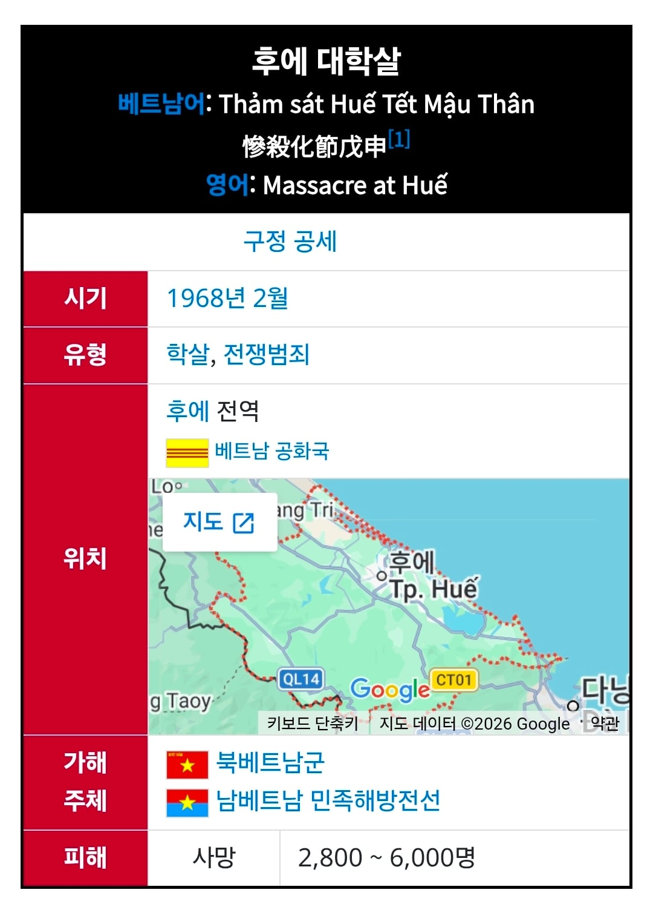
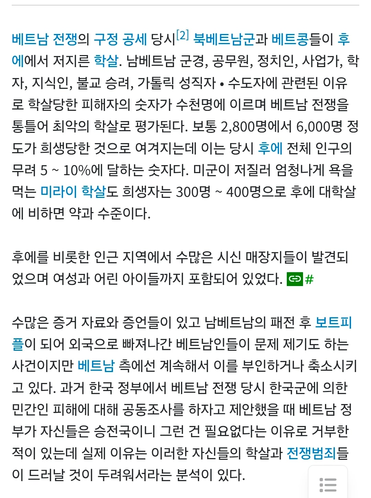

우리 국군이 뭐? ㅈ만한새끼들이 진짜


우리 국군이 뭐? ㅈ만한새끼들이 진짜
아무래도 베트남전은 전쟁주체가 현 베트남 정부(당시 북베트남)보단 남베트남내 베트콩이 중심이었다는부분도 좀 있다는거 같던데
진쪽이 사죄하는게 맞지않음?
그건 그냥 조약같은걸 맺는거지 사죄는 보통 전쟁범죄같은 행위를 저지른 승자쪽이 반성해야되서 하는거
글쎄.. 유대인 대학살도 결국 나치가 패배했기 때문에 독일이 죄의식을 가지는게 맞는거 아닐까 오히려 승전국이 사과하는 경우거 더 드문게 현실이긴함
사과 - 전쟁배상 - 조약 이렇게 다받는거아니었어?
패전했다고 사죄하면 승자인 북베트남 입장에서도 좋은 모양새가 아니어서 그럼. 적국을 물리친 위대한 우리 영웅들이어야 하는데 사죄를 받아드리면 서로 사이 좋게 좋게 가자는 식으로 되버리고 다시 나중에 언급하기도 어려워짐. 승전기념일 같은 것도 이미 사죄 받았는데 왜 함? 식이 되버리잖아
엥? 독일이랑 프랑스만 하더라도 전쟁후에 진쪽이 사과하고 전쟁배상금 물고하던뎅
애초에 민간인학살은 전쟁범죄인데 사죄를 받는게 왜 문제가 되지..
나치독일이 프랑스가서 사과하는데 왜사과하냐 하진않던데
나치독일은 대놓고 타국침략에 식민지배에 민족 대학살 한거라서 그런거잖아
베트남은 어쨌든 내전이기도 하고 빨리 끝나서 경우가 다르지
이게 무슨..
무슨 뭐..
? : 우리가 이겼다! (국토 십창남)
4번이 제일큼
당시에도 도게자 한번 박고 벳남에 공장세워서 싼 노동력으로 중국과 경쟁하자는 의도엿음. 결과적으로 섬유등 노동집약적 산업에서 우리가 버티는 이유임
흐에~~~~~
남베트남도 부정부패가 존나 심했어서 이겨도 발전은 못했을듯..
남베가 이겼어도 결국 독재 확정이지 뭐
저럼에도 불구하고,
국내 일부 병신같은 인권 단체는 국군의 베트남 학살 진상을 제대로 파악,인정하고 유족들에게 보상해야 한다고 주장하던데,
해당 국가 (공산)정부는 자꾸 거론되는 것 자체도 싫어하는데,
뭔 정의감인지, 일부 알그지 베트남인과의 결탁인지, 사죄하고 돈 주라고 지랄하는 건 뭔가 싶더라
돈이지 뭐
나는 그래도 한국이 유교영향받아서 남이 피해입은건 반드시 반성하고 진상을 밝혀야한다는 그 신념덕분에 발전하고 도덕적인 나라일수있다고봄 보통은 숨기고 은폐하고 부정하는데 한국사람들은 뭐라도 있는거 아니냐고 닥달하는 그게 오히려 난 자랑스러움
니 말대로 순수한 정의감, 올바름에 대한 신념이라면 모르겠지만,
윗 댓처럼, 대부분은 다른 이유라서 기분이 더러운거지
나도 사실관계 왜곡은 절대 안된다고 보긴함 근데 이런 태도덕분에 우리가 일본한테 할말이 있게됨 맨날 일본애들이 왜 너넨 베트남에 사죄안하냐 너네도 베트남 공격했다 이러면 우린 계속 사죄했는데? 걔들이 미국보고 먼저 사죄하라하던데?이러면 아무말도못하고 데꿀멍됨ㅋㅋㅋ
글 추가하렸다가 수정이 안되네...
일본에 대한 떳떳함 의견 동의.
진주만 공습 부대 남편 전사했던가 하는 할망구 데리고 미군한테 가서 사죄하라고 염병하던 프로그램이 갑자기 생각나네. 뒤통수 치려고 갔는데, 니네가 맞짱떠서 내 남편이 죽었어, 사과해! 머 이런 일본 원숭이들하고 명분 논쟁이 의미가 있나 싶기도 하고,...ㅋ
추가하려던 내용
*추가
또 생각난게,
당사자(베트남 정부)가 됐다, 마음만 감사히 받겠다 이미 공식 표명했는데,
저 지랄하는 게,
예전에 강남역? 여자 길거리 살해 사건에서
유족들이 더이상 해당 사건을 여자라서 죽었다 라며 페미들 선전선동에 이용하지 말아달라고 했음에도,
페미년들 좃까, 빼에액!!! 이지랄했던 것도 연상이 돼
구모씨 모름? 베트남전 한국군 폄하와 주작의 달인 ㅋㅋㅋㅋ
그걸 돈벌이로 쓰는 년놈들이 99%인게 현실임
구모씨가 주작한것도 봤음? ㅋㅋㅋㅋ 베트남전 관련해서 빠짐없이 등장하는 구모씨 ㅋㅋㅋㅋ
그리고 국군이 저질렀다고 의심받던 대부분의 학살은 북베트남 레인저마크(호랑이표식)을 맹호 표식으로 착각한것임이 드러났음
그리고 일부 학살이 이루어진바는 있으나, 국군은 정말 정말 우수한 대민활동으로 정평이 나있었음.
그걸 무슨 학살집단인것마냥 묘사하는 특정 정치세력 개병신들
그리고 먼저 제네바 협정 무시하고 군인이 민간인 복장하고 전투하고, 과일팔던 할머니 동원해서 폭탄테러 하고, 만삭의 임산부한테 수류탄 던지게 하는데, 정보원으로 의심되는 놈을 그냥 보내줌?
옆에 동료가 민간인 복장한 베트콩한테 뒷통수에 구멍 뚤려도 끝까지 정정당당하게 싸움?
나였으면 시바 10배 20배 보복한다.
10배 20배 보복이 민간학살로 이어지는거지.
저런 상황에서 민간인이 정보원 혹은 베트콩으로 강하게 의심되면 어쩜?
그냥 보내주고 뒷통수에 구멍 뚤려야함?
나였으면 죽임
이게 베트남전 국군한테만 적용되는 논리임?
상대가 제네바협정 진짜 ㅈ 까라하고 싸우는데 어떡함?
다른방법이 있음?
끝나고 시간이 지난 후 미안 한마디만 하면 되는데 그게 그렇게 어려움?
뭔소리임? 미안을 누구한테 한다는거야?
저거 북베트남 공산 정권이 남베트남 민주정권한테 승리한 전쟁 아님?
그리고 민간인 학살은 북베트남 공산 정권 베트콩들이 수십 수백배 더 많이 자행한거 아님?
그런데도 우리가 학살이 있었다면 미안하다니까 현재 베트남 정부가(북베트남에서 이어져온) 계속 얼버무리는거 아님?
자기들이 학살 훨씬 훨씬 더 심하게 했고, 제네바협정 ㅈ까라 한거 공식화될까봐 ㅋㅋ
그리고 그럼 반대로 현베트남 정부한테 우리가 사과받아야하는거 아님?
전쟁중에 제네바협정 개무시하고 민간인 복장입고 전투하고, 어린애들,할매할매들, 임산부들 동원해서 자폭테러한거 우리한테 사과해야하는거 아님?
후에에엥
베트남전 웅앵웅 하는것들은 죄다 베트콩 아님 섬숭이 우익들밖에 없더라
베트남이 사죄요구 안하는게 이유가 여러개있긴하다고 하더라고
1. 공격주체는 미국인데 미국도 안한 사죄를 한국이 할 이유가없다.왜 용병뛴 너네가 사죄하겠다고 난리냐
2. 우리도 학살한게있긴해서 조사하다보면 그게 같이나오는게 좀 그렇다.
3. 베트남은 승전국인데 진쪽이 사죄를 왜하냐 그래도 자기발로 아무튼 피해끼친걸 사죄하러 오겠다니까 고맙긴고맙다.
4. 한국하고 경제협력하는게 좋아서
베트남이 그래도 베트남전으로 한국에 원한이 크게 없는게 우리가 자꾸 시키지도 않은 사죄하러가서 진상찾아다니고 여기저기 묵념하고다니는걸 좋게봐주기도 한다고함 그리고 뭣보다 일단 베트남이 이겼으니까 아무래도 승리자 입장이니까